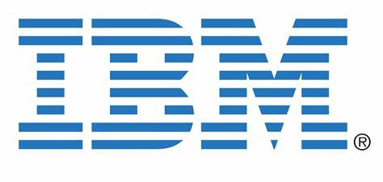

Education
- Completed graduation from Andhra University in the field of Electrical and Electronics engineering
- Currently pursuing Masters in Information Technology and Management(Specialization- MIS)- incoming Fall student 2022
Work Experience
IBM India Pvt lmtd(Bank of Nova Scotia)
IBM
Designed, Tested and developed the Internet banking application E-mail push notifications system on the Client servers for 13 countries.
Designed and coded SWIFT message notifications system for Dominican Republic country
Netcracker Technologies
Netcracker

Provided use cases, BRD, BN, DSO, BA, RTM, FRS documents to the client for various Telecommunications products.
Skills
IBM Certifications in Banking Industry (Entry & Intermediate level).
Computer: C, C++, Microsoft Excel, JAVA, Javascript, HTML,DB2 ,AWS.
Languages
- English
- Hindi
- Telugu
- Tamil
- Arabic